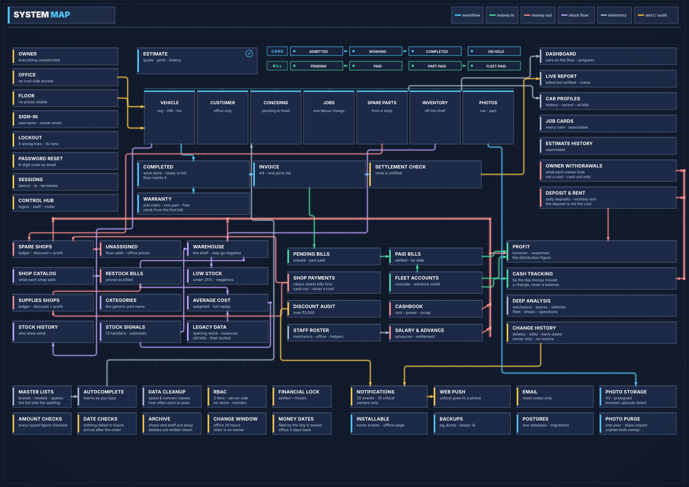

Technical overview
WorkshopOS “Titan”
A Django / PostgreSQL platform for a premium car workshop
- lines of code, in 510 files
- 169,231
- automated Django tests, plus 71 in JavaScript
- 3,185
- data models
- 49
- URL routes
- 324
- screens
- 140
- rule modules
- 21
- all-or-nothing transaction blocks
- 72
- commits, January to October 2026
- 294
What it does
One system for a workshop that ran on paper job cards, WhatsApp groups and spreadsheets: job cards, warehouse inventory, supplier and spare-shop ledgers, fleet billing, payroll, rent, estimates, warranty claims, photo evidence, printed service records, owner withdrawals and owner analytics. Three roles (owner, office, floor) each see only what they need. It is built for its real load: about thirty cars a month, six or seven staff and two owners.
Architecture
A Django 5.2 monolith in two apps, workshop for the core business logic and inventory for stock and supplier shops. Server-rendered, PostgreSQL in development and production, nine runtime dependencies, no build step and no bundler.
| Part | Files | Lines |
|---|---|---|
| Application code | 101 | 35,896 |
| Test suite | 92 | 48,146 |
| Database migrations | 105 | 3,128 |
| Django templates (screens) | 137 | 50,032 |
| Shared JavaScript and CSS | 12 | 6,646 |
| JavaScript tests | 4 | 1,076 |
Own code by language: Python 60.6%, HTML 15.7%, CSS 15.6%, JavaScript 8.0%. The test suite is larger than the application it tests: 1.34 lines of test for every line of application code.
System map
Every part of the system on one sheet: the three roles and their sign-in, the job card and bill as they move through their states, then stock, money in and out, alerts and the platform underneath. Lines show what feeds what: workflow, money in, money out, stock, telemetry and alerts and audit.

Design decisions worth knowing
One rule, one implementation. Twenty-one modules contain no screens. Each owns exactly one question: profit and cash for a date window, what a customer bill shows, whether a typed amount is acceptable, which part a warranty claim applies to. The rule exists because the cost of a spare part was once calculated in five places and gave two different answers.
Profit and cash are never added together. They differ by unused stock, unpaid bills and earlier payments, so both are shown side by side and never subtracted. Owner withdrawals are cash out, never an expense.
Inventory cost is a full replay. Warehouse cost is a weighted average recomputed in date order from every receipt, so back-dated supplier bills and negative stock re-price correctly. Per-batch cost is kept, so FIFO can still be reconstructed.
A part is paid for exactly once. A spare reaches a car either from a spare shop or from stock already paid for. The route is stored, never guessed, so expenses are never counted twice.
The server never works out a price. Customer prices are calculated in the browser in whole paise and reach a bill only when a person presses Save. The arithmetic has its own unit tests, with expected values produced in Python first, so browser and server cannot round differently.
Every typed rupee passes one gate. One module rejects values too large for the column, infinity and NaN before they can corrupt a total or crash a page.
Photographs never touch the server. The browser uploads straight to object storage on a signed URL. The request signing is written against the standard library and verified against Amazon's published test vector.
It installs into a workshop that is already running. Opening stock and shop balances are entered once, then locked. Years of earlier bills are typed in for history but touch no profit, cash or stock figure.
Every deletion and back-dated entry leaves a trace. Deletions write a snapshot first. A Change History page shows what was deleted, what was edited (before and after), and what was entered on a later day than the money moved.
Testing and documentation
3,185 Django tests in 569 classes across 91 files, plus 71 JavaScript tests on Node's built-in runner for the three modules written to be provable: price arithmetic, reading dates and amounts, and photo logic. The final full run passed all 3,185 tests in 49.6 minutes.
About 197,000 words of documentation across ten documents record 801 business rules and 526 hazards, each one a failure that raised no error and left the tests green, with 236 rules pointing to the test that guards them.
The client's code is private, so this overview shows the architecture and the ideas, not the code.